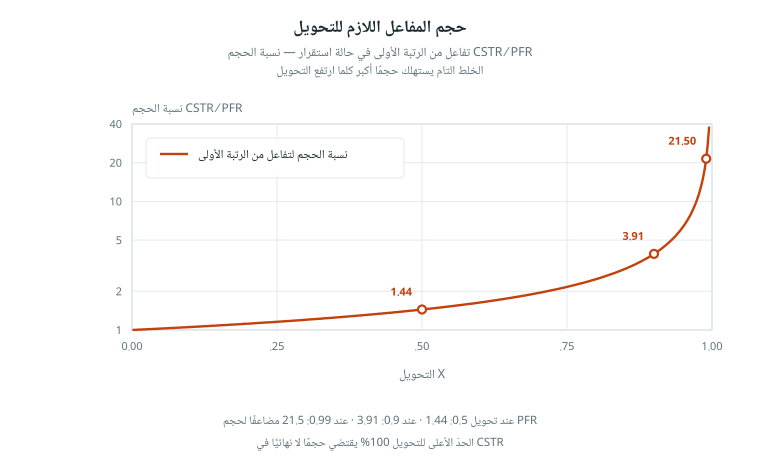

الهندسة الكيميائية
Chemical engineering
هندسة تحويل المواد الخام إلى منتجات عبر تفاعلات وفصل، بمنطق الكمّ والكلفة والأمان لا بمنطق أنبوب الاختبار. وحدتها الأساسية تصميم المفاعل والمفصل: الاختيار بين الخلط التام والجريان الأنبوبي يغيّر الحجم اللازم بعامل يتجاوز عشرين عند تحويل 99%.
الهندسة الكيميائية إدارة تحوّل على مقياس كبير. المسألة ليست «هل يتفاعل هذان المركّبان؟» بل «بأي حجم وكم حرارة وبأي كلفة ونقاوة وبأي خطر؟». ولهذا يجتمع في التصميم أربعة قيود: الحركية (كم بطيء التفاعل)، والديناميكا الحرارية (إلى أي حدّ يمضي)، والانتقال (كيف تصل الحرارة والمادة)، والاقتصاد (كم يكلّف ذلك).
والقرارات الهندسية تُقارن بالحجم والكلفة لا بالكمال النظري. مفاعل الخلط التام أرخص بناءً وأبسط تشغيلًا وأفضل في ضبط الحرارة، لكنه يعطي كل حجم تركيزًا منخفضًا فيبطؤ التفاعل. أما المفاعل الأنبوبي فيحفظ التركيز متدرّجًا فيحتاج حجمًا أقل للتحويل نفسه — والفرق يُقاس بمعادلة واحدة ويصبح قياسًا لا جدلًا.
كيف تعمل الظاهرة؟
معدّل التفاعل يعتمد على التركيز والحرارة والضغط والمحفّز. في مفاعل الخلط التام يكون التركيز داخل الحجم مساويًا لتركيز الخرج، فيعمل التفاعل كله عند أدنى تركيز، ومن هنا يأتي الحجم الكبير. في المفاعل الأنبوبي يقلّ التركيز تدريجيًّا من المدخل إلى المخرج، فتبدأ السرعة عالية وتنخفض، ومتوسّطها أعلى فتُنجَز نفس النسبة في حجم أصغر. وتضاف مقاومة الانتقال الحراري والكتلي فتقلّب الحساب: مفاعل بلا تبريد كافٍ لا يُختار لأن التفاعل يسرع مع الحرارة ويولّدها فيصير انفلاتًا حراريًّا.
العلاقة بالأرقام
لتفاعل من الدرجة الأولى ثابت سرعته k في مفاعل خلط تام عند تحويل X: V = F·X ⁄ (k·(1−X))، وفي مفاعل أنبوبي: V = F·ln(1 ⁄ (1−X)) ⁄ k. والنسبة = X ⁄ [(1−X)·ln(1 ⁄ (1−X))]، فتعطي 1.44 عند 50%، و3.91 عند 90%، و9.29 عند 95%، و21.5 عند 99%. أي أن مطاردة التحويل الأخير تكلّف حجمًا مضاعفًا عشرين مرة. ومعامل «عدد وحدات الانتقال» وحده لا يكفي، فالتصميم الواقعي يضيف هامشًا للتبريد والخلط وانخفاض الإنتاجية عبر التشغيل.
مفاهيم متقاربة
الهندسة الكيميائية ليست الكيمياء التطبيقية: الكيمياء تسأل ما يحدث، والهندسة تسأل بأي معدّل وبأي حجم وبأي كلفة وبأي أمان. وليست هندسة العمليات الميكانيكية: تلك تنقل وتحوّل ماديًّا، وهذه تحوّل تراكيب جزيئية. والمفاعل ليس الخزان: الخزان يخزّن، والمفاعل مصمّم لتحويل بنسبة مئوية محدّدة بمقاييس حركة وحرارة موصولة بمنظومة تحكّم. وأخيرًا الاختيار بين CSTR وPFR ليس تفضيلًا نظريًّا بل قرار قائم على كلفة الحجم مقابل كلفة ضبط الحرارة والخلط.
حدود التطبيق
معادلات التصميم أعلاه تفترض خلطًا تامًّا أو جريانًا سدّيًّا، وكلاهما مثالي: الواقع فيه مناطق راكدة ومسارات قصيرة تقلّل التحويل الفعلي عن المحسوب، ولهذا تُضاف تجارب تتبّع وتوزيع زمن المكوث. وتفشل النماذج في الأنظمة متعدّدة الأطوار (غاز–صلب، سائل–سائل) لعدم كفاية معاملات الانتقال الحقيقية. والحركية المقاسة في المختبر تتغيّر في المصنع بتغيّر نقاء المواد وترسّب المحفّز، فالتصميم يحتاج هامشًا لا مطابقة صيغة.

| الكمية | القيمة | المصدر |
|---|---|---|
| نسبة الحجم عند تحويل 90% | 3.91 بلا وحدة | [1] |
| نسبة الحجم عند تحويل 99% | 21.5 بلا وحدة | [1] |
| نسبة الحجم عند تحويل 50% | 1.44 بلا وحدة | [2] |
| زمن المكوث اللازم للتحويل 99% في مفاعل أنبوبي | 4.61 مضاعف لـ 1/k | [1] |
المصادر
- 1 IChemE — What chemical engineers do — Institution of Chemical Engineers. www.icheme.org/ · اطُّلع عليه 2026-11-16
- 2 Continuous stirred-tank reactor — design and comparison with plug flow — Encyclopaedia Britannica. www.britannica.com/technology/chemical-reactor · اطُّلع عليه 2026-11-16
- 3 Chemical engineering — unit operations and process design — Encyclopaedia Britannica. www.britannica.com/technology/chemical-engineering · اطُّلع عليه 2026-11-16
استشهد بهذا المصطلح
الصيغتان مبنيتان من بيانات الصفحة نفسها: العنوان والتاريخ ورابط النسخة المنشورة.
الهندسة الكيميائية — Chemical engineering. (2026). ديوان المعرفة — انفراد. https://infiradev.com/diwan/terms/chemical-engineering.html
@misc{chemical-engineering2026,
title = {الهندسة الكيميائية},
titleaddon = {Chemical engineering},
howpublished = {{ديوان المعرفة — انفراد} — مرجع علمي عربي},
year = {2026},
url = {https://infiradev.com/diwan/terms/chemical-engineering.html},
urldate = {2026-11-16},
note = {مراجعة علمية: مراجعة آلية — ديوان المعرفة (روابط المصادر + عقد المحتوى + وجود الرسم) 2026-11-16}
}
راجعه: مراجعة آلية — ديوان المعرفة (روابط المصادر + عقد المحتوى + وجود الرسم) 2026-11-16 · 2026-11-16 · آخر تحديث 2026-11-16